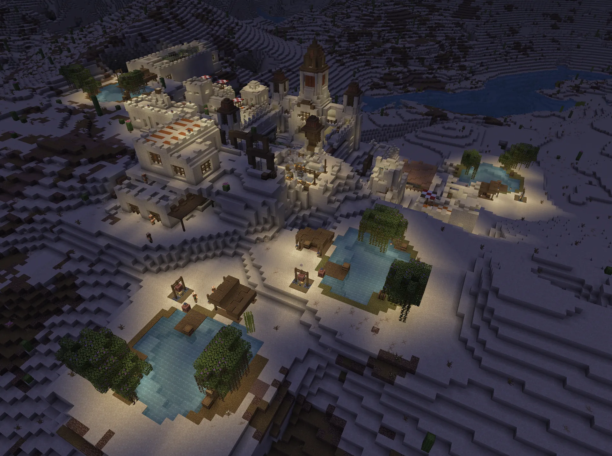
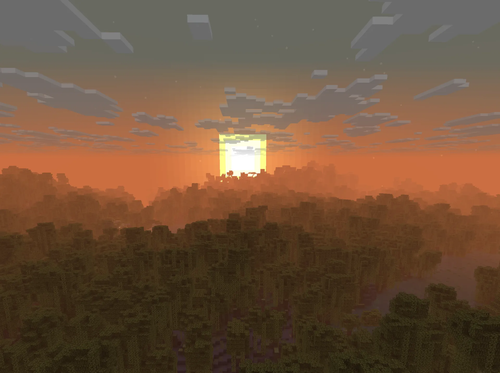
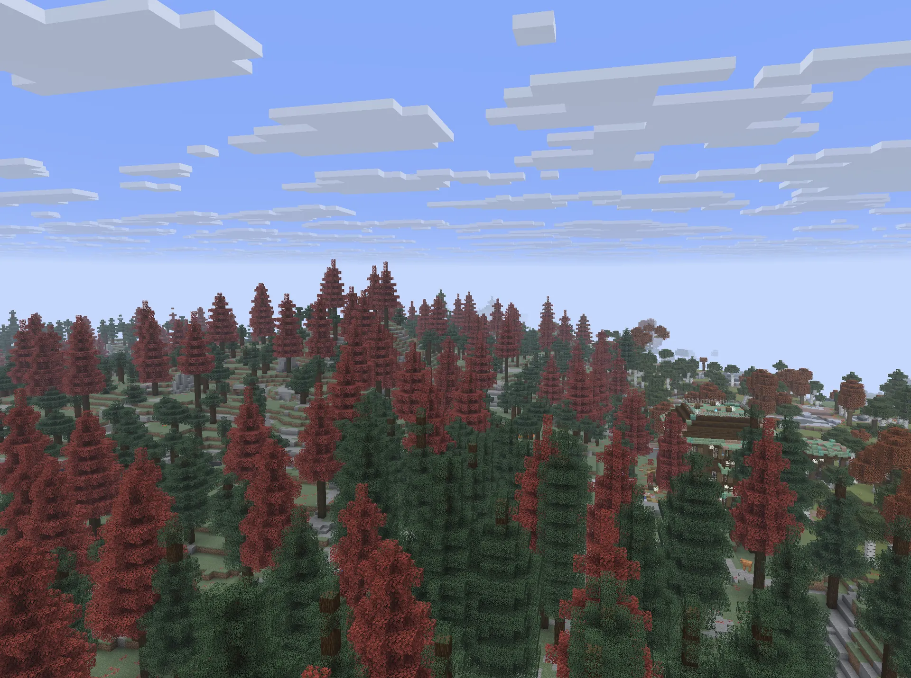
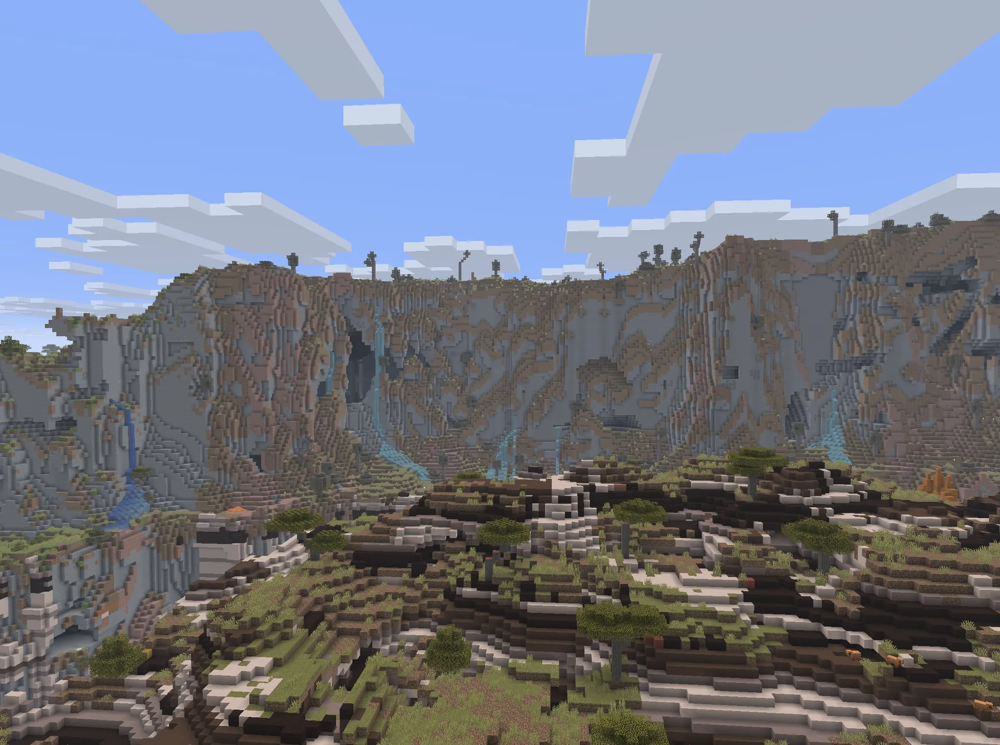

- 支持版本1.21.7 — 26.2
- 接入方式原版多人游戏
- 登录正版 / 离线均可
- 跨版本ViaVersion + ViaBackwards
更新日志写明最低支持 JE 1.21.7；Dialog 界面需 1.21.6+ 客户端。
手机、主机、PC 基岩版玩家与 Java 版玩家同图生存。
为朋友联机 / 团建 / 养老搭建，困难难度原版生存。
mossymc.top
// 双端互通
Geyser + Floodgate 打通协议层，不需要登录器，直连服务器地址。
更新日志写明最低支持 JE 1.21.7；Dialog 界面需 1.21.6+ 客户端。
若被误判为 Java 玩家，退出重进即可（Floodgate 已知问题）。
// 服务器规格
不堆术语——只写玩家进服前真正想知道的事。
// 玩法特色
CROSS-PLATFORM
Java 与基岩同图生存，装备、聊天、传送全部互通。
SLIMEFUN
数百道自动化与魔法配方，从手搓电路攀到量子设备。
ECONOMY
商店收购 + 玩家市场双向定价，摆摊上架各凭本事。
GUILDS
建会共享领地与仓库，等级解锁权限与加成。
BATTLE PASS
每日签到累积进度，赛季战令解锁称号外观。
TITLES
菜单自由切换，聊天栏与 TAB 里一眼认出老玩家。
MULTIVERSE
主世界 / 资源世界 / 活动世界分线，背包独立存取。
QUALITY
坐下躺下、随机传送、公共垃圾桶、方块变动回溯。
// 世界掠影
由苔石Server 玩家共同建造与捕捉。




// 立即开始
join mossymc.top
多人游戏 → 添加服务器 → 填入 mossymc.top，无需端口（SRV 已配置）。
服务器 → 添加 → 同一地址；或直连 play.simpfun.cn:30843。
进服先看站内 玩家文档（新手 / 命令 / 玩法 / FAQ）， 整合包问题再看 ZeroNight 官方文档。